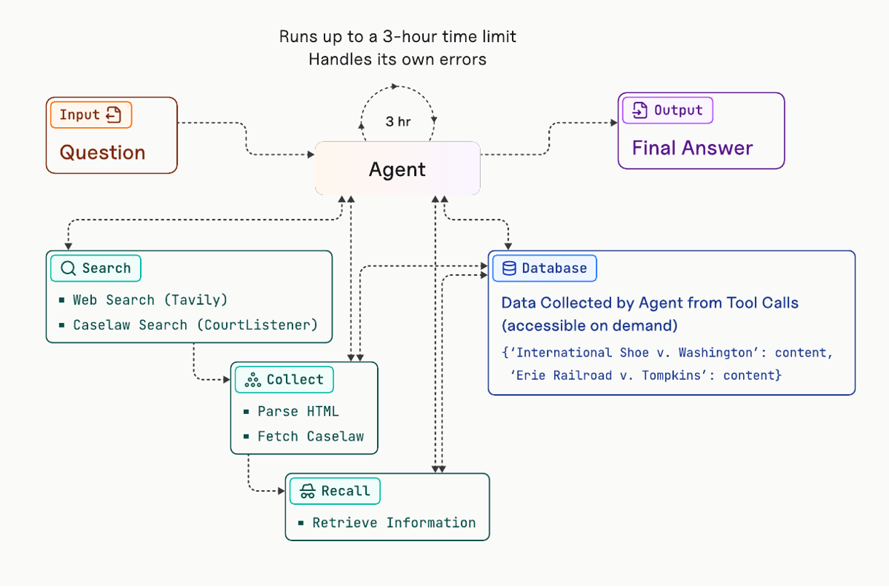
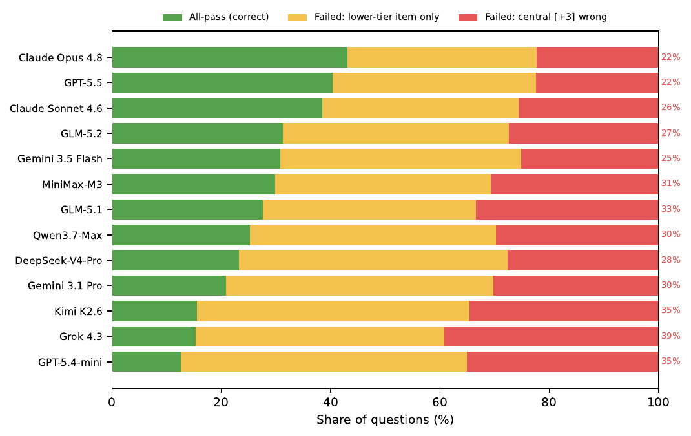
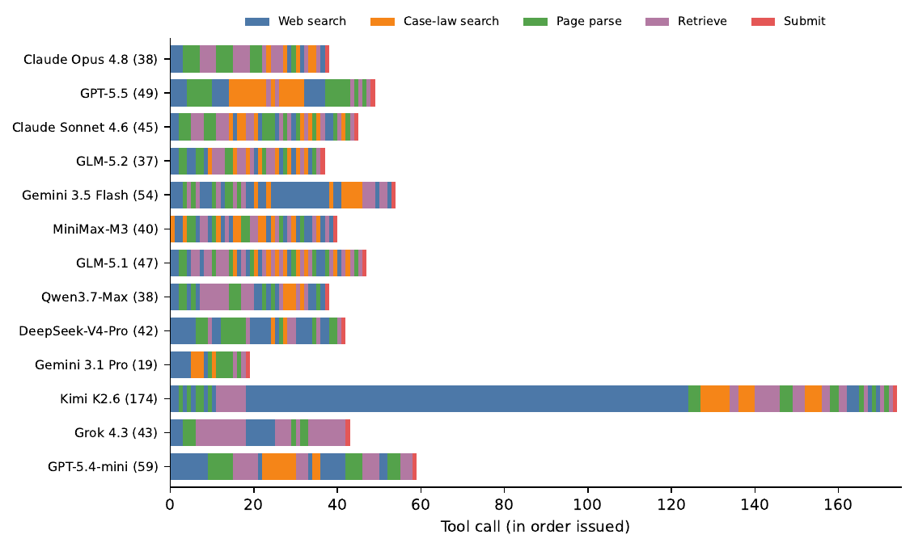

⚠️ Lecture de contexte : ce papier est le papier de Vals AI sur Legal Research Bench, c.-à-d. l'un des deux benchmarks d'évaluation cibles annoncés (« Vals Legal Research Bench »). Il ne décrit pas un env RL : c'est la définition de la fonction objectif sur laquelle le travail sera jugé. Les sections 4 (optimisation) et 6 (infra) sont donc traitées « en creux » : ce que le papier ne dit pas est ici une information de premier ordre.
TL;DR — 413 questions de recherche juridique US ouvertes, écrites par 15 avocats praticiens (~4 h-avocat par item), chacune avec gold answer, liste de sources et rubrique binaire ; notation all-pass (toutes les critères satisfaits ET toutes les URL citées valides, sinon faux) ; juge LLM calibré contre 3 avocats avant usage ; 13 modèles frontier dans un harness à 5 outils (Tavily, CourtListener, parsing, retrieval, submit), plafond 3 h wall-clock.
Claim principal, précisément : sous une métrique de fiabilité bout-en-bout (all-pass + source check), les agents frontier sont loin de la fiabilité exploitable — le meilleur modèle testé, Claude Opus 4.8, est complètement correct sur 42,9 % des 413 questions, alors que le crédit partiel (weighted pass) atteint 68–86 % [§5.1, Tab. 3] ; les échecs sont systématiques (variation par domaine de droit, pénalité sur les questions de reconciliation) et l'effort agentique — tours, appels d'outils, coût d'inférence — ne prédit pas la justesse entre modèles [§5.4].
Claim secondaire méthodologique, et le plus important pour nous : le juge LLM est validé avant usage contre la majorité de 3 avocats sur 341 items de rubrique, et ses taux d'erreur item-level (FP 5,6 % / FN 7,0 %) sont choisis équilibrés précisément parce qu'une erreur unilatérale se compose sous all-pass [§4.2, App. B].
Origine des tâches — humaines, de bout en bout. - Chaque item est écrit par des avocats praticiens US : question de recherche ouverte + gold answer + liste de sources curée + rubrique binaire [§3.1]. - 15 avocats praticiens, 15 ans d'expérience en moyenne, ont contribué à l'écriture et à la relecture [§3.1]. - Relecture croisée : chaque item est revu indépendamment par au moins un avocat supplémentaire [§3.1]. - Zéro assistance IA sur le ground truth, « au-delà d'une relecture orthographique légère » (light copyediting) [§3.1]. ⚠️ Point rare et important : la vérité terrain n'est pas model-generated puis validée, elle est écrite à la main.
Coût humain. - ~4 heures-avocat par item [§3.1] → ⚠️ mon calcul : 413 × 4 ≈ 1 650 h-avocat pour le corpus, hors calibration du juge. Tarif horaire et coût monétaire : non précisé (les avocats sont décrits comme « compensated contributors » dans l'Ethics Statement, sans montant).
Pipeline de construction (tel que décrit, §3.1 — pas de diagramme de pipeline) : 1. rédaction par un avocat praticien : question ouverte autour d'un fact pattern nouveau ; 2. critère d'inclusion : l'item doit exiger un raisonnement juridique, pas un factual lookup ; 3. critère d'inclusion n°2 : la réponse correcte doit être « suffisamment objective pour obtenir l'accord entre avocats » — c'est le filtre qui rend l'all-pass possible ; 4. ancrage temporel quand l'autorité peut évoluer : la question porte un « Answer as of [date] » explicite et l'agent est prompté pour répondre à cette date ; 5. rédaction de la gold answer + liste de sources + rubrique binaire pondérée ; 6. revue indépendante par ≥ 1 autre avocat.
Volume et distribution. - 413 questions, 8 domaines de droit, 10 types de question fins [§3.2]. - Split : 5 questions publiques · 200 validation · 208 test ; les résultats du papier sont rapportés sur les 413 sauf mention contraire [§3.2]. ⚠️ Conséquence : les chiffres publiés mélangent val et test ; pas de résultat test-only. - Multi-label : 37,8 % des questions portent > 1 domaine de droit (1,41 domaine en moyenne) [§3.2]. - Domaines [Tab. 1] : Administrative/Regulatory 128 · Criminal 117 · Business & Commercial 88 · Constitutional/Civil Rights 72 · Health 58 · Civil Litigation 51 · Family 45 · Immigration 22. - Schéma de types : 3 primary reasoning categories (Statutory Interpretation 288 · Doctrinal Rule Reasoning 262 · Regulatory Framework Interpretation 91) + 2 difficulty attributes (Reconciliation 116 · Temporal Validity 66) [Tab. 1]. Les 10 types fins et leur mapping sont en [Tab. 5, App. C]. - Taille des items : liste de sources = 6,2 sources en moyenne, médiane 6, max 23 ; rubrique = 9,4 critères en moyenne, médiane 9, max 31 ; gold answers = 536 mots en moyenne, médiane 429 [§3.2].
Distribution de difficulté — mesurée a posteriori, pas construite. Aucun ciblage de difficulté par pass@k d'un modèle de base : le papier ne filtre pas les items par la performance d'un modèle. La difficulté est décrite après coup : all-pass poolé 41,8 % sur les questions à ≤ 6 critères contre 15,2 % sur celles à ≥ 13 critères, corrélation de rang −0,287 entre nombre de critères et all-pass [App. C].
Filtrage par modèle : non précisé / absent. Le seul filtre est humain (objectivité + accord inter-avocats). ⚠️ C'est l'inverse de la pratique RLVR (filtrage par pass@k) — et c'est cohérent avec un objectif de mesure, pas d'entraînement.
Curriculum : sans objet (pas d'entraînement).
Contamination. - Items écrits autour de fact patterns nouveaux « pour réduire la mémorisation » [§3.1]. - 408 des 413 questions retenues (val + test non publiées) « pour limiter la contamination » [§3.2, Ethics Statement]. - ⚠️ Aucune mesure de contamination rapportée (pas de n-gram overlap, pas de canary). L'argument est structurel (données non publiées + faits inventés), pas empirique. L'ablation no-tool (§5.5, voir §7) est le meilleur proxy : en single-shot sans outils, l'all-pass s'effondre à 2,2–8,7 %, ce qui est un argument fort contre la mémorisation.
Données SFT/IFT avant RL : sans objet — aucun entraînement.
Harness publié (GitHub vals-ai/legal-research-bench) et présenté comme reproductible [§1, contribution 2].
Observation. À chaque tour, l'agent voit la question (avec son ancrage temporel « Answer as of [date] ») et les retours d'outils : liens + extraits courts pour la recherche web, texte d'opinion pour CourtListener, contenu parsé pour les pages, réponse de retrieval pour les documents stockés [§4.1, Fig. 1]. Le prompt système exact de l'agent n'est pas reproduit — non précisé. ⚠️ Lacune de reproductibilité notable pour un papier qui revendique un harness reproductible : le harness est sur GitHub, mais le papier ne contient pas le prompt.
Espace d'actions — 5 outils [§4.1, Fig. 1, et les 5 catégories de la Fig. 11] : | Outil | Fonction telle que décrite | Backend | |---|---|---| | Web search | renvoie des liens avec de courts extraits | Tavily | | Case-law search | trouve des opinions par mot-clé, en langage naturel, ou par citation lookup ; récupère le texte intégral | CourtListener | | Page parse / fetch | même chose pour toute autre page web | — | | Retrieve (recall) | répond à un prompt contre les documents stockés | base interne | | Submit | soumet la réponse finale | — |
⚠️ Les signatures exactes des outils ne sont pas fournies dans le papier — non précisé ; seules la prose de §4.1 et la Fig. 1 les décrivent. Pour un portage, il faut lire le dépôt.
Gestion du contexte long — le mécanisme clé. Case-law search et page parse stockent ce qu'ils récupèrent sous une clé choisie par l'agent ; l'outil retrieve répond ensuite à un prompt contre ces documents stockés, « de sorte qu'une opinion trop longue pour tenir en contexte reste utilisable » [§4.1]. Autrement dit : mémoire externe clé-valeur gérée par l'agent + RAG sur sa propre collecte, au lieu d'une troncature ou d'un résumé. La Fig. 1 montre explicitement la Database comme {'International Shoe v. Washington': content, 'Erie Railroad v. Tompkins': content}, « accessible on demand ».
Multi-turn, horizon. - Budget non pas en nombre de tours mais en temps mural : 3 heures par question [§4.1]. Justification des auteurs : un budget temps « reflète mieux les workflows de recherche réels et rend l'évaluation comparable entre harnesses, outils et implémentations d'agent alternatifs ». - Le plafond n'est pas contraignant : aucune réponse all-pass n'a pris plus de 1,9 h, et 95 % des runs finissent en ~50 min [§4.1]. - Horizon effectif observé : 11,7 tours (Claude Opus 4.8) à 99,6 tours (Kimi K2.6), 21,5 à 112,3 appels d'outils [Tab. 3]. Sur une question unique, la trajectoire va de 19 à 174 appels [App. G].
Exécution. API externes réelles (Tavily, CourtListener) sur le web vivant — pas de sandbox, pas de snapshot gelé du corpus juridique. Les auteurs reconnaissent en Limitations que le benchmark est lié à « un snapshot figé de modèles, d'outils et d'autorité juridique ». ⚠️ Déterminisme : non précisé ; aucun cache de recherche, aucun replay. Conséquence directe : l'environnement n'est pas reset-able à l'identique, ce qui le disqualifie tel quel comme env RL (voir §9). - Reset / timeouts par outil : non précisé (seul le budget global de 3 h est donné).
Gestion des erreurs. « L'agent gère ses propres erreurs » (the agent manages its own errors) [Fig. 1, légende ; repris dans la Fig. 1 elle-même : « Handles its own errors »]. Aucune politique de retry côté harness n'est décrite — non précisé. Sorties mal formées : non précisé (le seul garde-fou documenté est le source check a posteriori).
Exemple de trajectoire — recopié d'[App. G] (question P-005, leasing d'équipement en Virginie, UCC Art. 2A) : - Claude Opus 4.8 — 38 appels : « web and case-law search to frame the issue, CourtListener to read the controlling provisions and decisions, page reading and retrieval to pull specific passages, then a single submission. It cites eight authorities, all of which verify, but misses one rubric criterion. » - Kimi K2.6 — 174 appels, dont 117 web searches : « satisfies every criterion, but cites no authority and so fails the source check. » - Grok 4.3 : « it never queries CourtListener, working from web search alone, and cites three authorities for 76 % of the rubric weight. » - Synthèse des auteurs : sur cette question, les trois échouent pour des raisons distinctes — « one grounded but incomplete, the other complete but ungrounded, the third never reaching primary authority » [App. G]. - Les 5 modèles qui font un score complet sur P-005 se groupent entre 37 et 45 appels [App. G].
Le texte intégral de la question P-005 est reproduit en [App. A] (fact pattern de ~250 mots : reefer trailers, faillite Chapter 7 du fabricant, clause « absolute and unconditional » de hell-or-high-water). ⚠️ En revanche ni la gold answer ni les 12 critères de la rubrique de P-005 ne sont reproduits dans le papier — non précisé (il faut le dépôt).
C'est le cœur transférable. Trois couches : rubrique binaire experte → agrégation all-pass → source check.
Design de l'étude de calibration [§4.2] : - 3 avocats et 3 juges candidats (Claude Sonnet 4.6, Gemini 3.1 Pro Preview, GPT-5.4) notent 341 items de rubrique, tirés de 45 réponses de modèles à 15 questions, sur un held-out calibration study. - Label de référence = majorité des avocats (3 votants). - ⚠️ Mon calcul : 341 items / 45 réponses ≈ 7,6 items/réponse ; 45 réponses / 15 questions = 3 réponses par question. Les 15 questions = 3,6 % des 413. La strate n'est pas précisée : le papier ne dit pas comment les 15 questions ont été choisies, ni si elles couvrent les 8 domaines de droit ou les 10 types. Aucun accord juge-avocat par domaine ni par type n'est rapporté — alors que c'est précisément l'axe sur lequel le papier revendique des différences systématiques (§5.3). ⚠️ Risque non testé : le juge pourrait être moins fiable sur Family (le domaine le plus dur, 14,9 %) que sur Health.
Résultats item-level [Tab. 2, 341 comparaisons] :
| Rater | Agree | Cohen's κ | FP | FN | Pass |
|---|---|---|---|---|---|
| GPT-5.4 (retenu) | 87,4 | 0,715 | 5,6 | 7,0 | 66,3 |
| Gemini 3.1 Pro Preview | 87,4 | 0,726 | 2,9 | 9,7 | 61,0 |
| Claude Sonnet 4.6 | 86,5 | 0,708 | 3,2 | 10,3 | 60,7 |
| Human (inter-rater avg) | 83,4 | 0,644 | n/a | n/a | 67,7 |
Résultats task-level (agrégation en all-pass) [§4.2, texte seul, pas de tableau] : les verdicts par item de GPT-5.4 traduits en all-pass concordent avec la majorité experte sur 86,7 % des réponses (κ = 0,710), contre une baseline humaine inter-rater de 87,9 % (κ = 0,735).
Critère de sélection du juge — explicitement pas le κ maximal [§4.2, App. B] : 1. taux de pass le plus proche de la majorité avocat (66,3 % vs 67,7 %) → réduit le risque qu'un juge trop strict ou trop laxiste décale systématiquement les scores ; 2. profil d'erreur équilibré : ratio FP:FN ≈ 1:1,3 pour GPT-5.4, contre 1:3,2 à 1:3,3 pour les juges Claude et Gemini (plus stricts). Argument des auteurs : « a balanced profile matters under all-pass grading, where one-sided item-level errors compound across a multi-item rubric » [App. B]. ✅ Raisonnement correct et important : sous une conjonction de ~9 items, un biais FN unilatéral de 10 % écrase l'all-pass. 3. Les auteurs notent que le juge retenu reste légèrement strict (FN > FP), donc les all-pass publiés sont « une estimation légèrement conservatrice de la performance notée par un humain » [App. B].
Checks de robustesse [App. B] : - Pas un artefact des items faciles : en excluant 4 questions quasi-uniformes dont les labels constants rendent κ indéfini, il reste 308 comparaisons sur les items plus durs, et le κ de chaque juge baisse de moins d'un point (GPT-5.4 : 0,715 → 0,705). - Pas de complaisance intra-famille (same-family leniency) : « each judge's lowest agreement is on models from its own provider » [App. B].
Test adversarial du juge : NON — aucun. Le papier ne rapporte aucun test de prompt injection, de reward hacking, de réponse adversariale conçue pour tromper le juge, ni de stress-test sur des citations fabriquées plausibles. C'est une absence, et elle est crédible comme absence : le papier est un instrument de mesure sur des modèles non entraînés contre lui, pas un reward sous pression d'optimisation. ⚠️ Mais cela signifie que la fiabilité du juge n'est établie que hors distribution adverse — exactement le régime que le RL quitte dès le premier step.
Prompt du juge et texte des rubriques : NON RECOPIÉS DANS LE PAPIER. ⚠️ Vérifié sur l'intégralité des annexes A–G : [App. A] donne le fact pattern de P-005 mais ni sa gold answer ni ses 12 critères ; [App. B] ne contient que des analyses de calibration. Il n'y a aucun prompt de juge, aucun gabarit de rubrique, aucun critère de rubrique littéral dans le papier. → non précisé ; à récupérer dans le dépôt GitHub.
Fiabilité du vérifieur, bilan : couche juge mesurée et validée (κ 0,715 item / 0,710 task, vs humains 0,644 / 0,735) ; couche source check non mesurée ; couche rubrique non mesurée (aucun accord inter-avocats sur la rédaction des rubriques, seulement sur leur application). ⚠️ Distinction cruciale : la validation porte sur « le juge applique-t-il la rubrique comme un avocat », pas sur « la rubrique capture-t-elle la bonne réponse » — ce second point repose entièrement sur le double review humain de §3.1.
Aucune. Papier d'évaluation pure : pas de RL, pas de SFT, pas de DPO, aucun entraînement d'aucune sorte. Ni algorithme, ni hyperparamètre, ni courbe d'apprentissage.
Ce qui manque et qui serait nécessaire pour en faire un env d'entraînement — tout non précisé : - paramètres de sampling des 13 modèles évalués (température, top-p, budget de thinking, seed) : non précisés, ce qui est une lacune de reproductibilité même pour la simple évaluation ; - un seul run par question par modèle, reconnu en Limitations : « each model was evaluated in a single run per question, so the reported rates carry sampling uncertainty over questions but not run-to-run variance » ; - pas de pass@k, donc aucune base pour construire un curriculum ou estimer la variance intra-question — alors que pass@k est le filtre standard d'un env RLVR.
Signal exploitable malgré tout : les 13 modèles sont évalués dans le même harness, avec les mêmes outils et le même budget de 3 h, et tous sont sortis entre février et juin 2026 [§4.1] — c'est une comparaison appariée propre, qui sert de référence externe calibrée.
Le papier ne parle pas de reward hacking (rien à hacker : aucun modèle n'est entraîné contre ce reward). Il documente en revanche des failure modes d'agents très informatifs, et l'un d'eux est un hacking en puissance.
| # | Comportement | Comment détecté | Correction |
|---|---|---|---|
| 1 | Central-wrong : réponse fluide, crédit partiel élevé, mais rate un critère [+3] portant la conclusion juridique centrale. 29,5 % des questions toutes modèles confondues, soit ~41 % de tous les échecs [§5.2, Fig. 9 App. E]. Par modèle : 22 % (Opus 4.8, GPT-5.5) à 39 % (Grok 4.3) [Fig. 9] | pondération [+3] de la rubrique + décomposition des échecs | aucune correction (c'est le constat du papier) ; c'est la motivation de l'all-pass contre le crédit partiel |
| 2 | Complet mais non grounded : tous les critères satisfaits, zéro autorité citée → échec au source check. 4,3 % des runs satisfont toute la rubrique et échouent au source check [§5.2] ; cas Kimi K2.6 sur P-005, 174 appels dont 117 web searches, aucune citation [App. G] | source check | marque la réponse entière fausse |
| 3 | Ne touche jamais l'autorité primaire : Grok 4.3 « never queries CourtListener, working from web search alone », 3 autorités pour 76 % du poids de rubrique [App. G] | trace de trajectoire (composition des outils) | aucune ; révélé par l'analyse, pas corrigé |
| 4 | Verbosité structurelle massive : réponses 4× plus longues que les références (Claude Sonnet 4.6 ~2 320 mots vs 536 mots de gold) ; « largement structurel et expositif plutôt que substantiel » — en-têtes de section, structure IRAC, parcours explicite de chaque élément statutaire même non contesté, récitation de cadres de fond non demandés [App. F] | lecture manuelle des réponses du set public | aucune (pas de pénalité de longueur dans le reward) |
| 5 | Recherche compulsive sans gain : Kimi K2.6, 99,6 tours / 112,3 appels / 86,4 web searches par question → 15,5 % all-pass ; Opus 4.8, 11,7 tours / 28,7 appels → 42,9 % [Tab. 3, Fig. 7 App. E] | corrélation effort↔score entre modèles | aucune |
| 6 | Citation invalide ou qui ne pointe pas vers l'autorité revendiquée [§5.2] | source check | marque la réponse fausse |
Comportements émergents positifs : les trajectoires montrent que « les agents les plus forts lisent et vérifient l'autorité plutôt que d'émettre des recherches répétées » [§5.4] ; Opus 4.8 équilibre case-law et web search à parts à peu près égales (~8–9 appels chacun) là où les gros chercheurs web sont en bas de classement [Fig. 6, App. E].
⚠️ Mon évaluation. Le failure mode #4 (verbosité non pénalisée) + #1 (central-wrong) définissent ensemble la surface de hacking d'un futur reward juridique : une rubrique conjonctive notée par un juge LLM récompense l'exhaustivité verbale (couvrir tous les critères en récitant tout) et ne pénalise ni la longueur ni la dilution. Un agent entraîné contre LRB apprendrait très probablement à produire des mémos de 3 000 mots couvrant toutes les branches possibles — ce qui maximise l'all-pass tout en étant inutilisable pour un avocat. Le papier observe déjà ce gradient sans optimisation (ρ ≈ 0,7 entre longueur et all-pass, [App. F]) ; sous RL il deviendrait la stratégie dominante. Le papier ne le signale pas comme un risque.
| Chiffre annoncé | Où il est annoncé | Source dans le papier | Verdict |
|---|---|---|---|
| « 413 open-ended U.S. legal research questions written by experts » | abstract, intro | §3.1, §3.2, Tab. 1 (somme des domaines = 581 car multi-label ; 413 est le N du corpus) | confirmé |
| gold answer + supporting authorities + binary rubric par question | abstract | §3.1, §3.2 (6,2 sources moy., 9,4 critères moy., gold 536 mots) | confirmé |
| « thirteen frontier models » | abstract | Tab. 3 = 13 lignes ; §4.1 « N=13, all released between February and June 2026 » | confirmé |
| harness « web search, case-law search, page parsing, and retrieval tools » | abstract | §4.1 + Fig. 1 : 5 outils (les 4 cités + submit) | confirmé |
| all-pass = correct ssi tout critère satisfait et autorités citées vérifiées | abstract, intro | §3.3 | confirmé |
| « strongest, Claude Opus 4.8, is fully correct on 42.9 % » | abstract, intro | Tab. 3 : 42,9 ± 2,4 | confirmé sur le chiffre, mais ⚠️ « strongest » sur-généralisé : [App. D, Tab. 7] donne Opus vs GPT-5.5 (40,0) à McNemar p = 0,173, non séparés ; les auteurs écrivent eux-mêmes que « the leaderboard supports tiers rather than a strict ordering ». L'abstract ne porte pas cette nuance |
| weighted pass « from 68 % to 86 % » | §5.1 | Tab. 3 : min 68,0 (GPT-5.4-mini), max 85,6 (Sonnet 4.6) | confirmé (85,6 arrondi à 86) |
| le plus faible atteint 12,6 % | §5.1 | Tab. 3 : GPT-5.4-mini 12,6 ± 1,6 | confirmé |
| « all-pass rates differ across areas of law » : 44,2 % Health → 14,9 % Family | abstract, §5.3 | Fig. 2 (heatmap) ; chiffres donnés dans le texte de §5.3 uniquement, pas de tableau | confirmé (texte ↔ figure ; non vérifiable au chiffre près hors figure) |
| « the best model in the hardest area reaches only 24.4 % » | §5.3 | Fig. 2 / Fig. 5 (App. E, best per area) | confirmé (figures ; valeur non tabulée) |
| reconciliation plus dure : 20,4 % [16,1–24,9] vs 29,9 % [26,4–33,4], « a gap of 9.4 percentage points » | abstract, §5.3 | §5.3 ; 29,9 − 20,4 = 9,5 | ⚠️ contredit à la marge : 9,4 annoncé vs 9,5 calculé sur les valeurs publiées. Écart d'arrondi sur les valeurs non arrondies, sans conséquence, mais c'est une incohérence texte↔chiffres |
| « a penalty that holds for every model » | §5.3 | Fig. 5 (App. C, category_heatmap, per-model) | confirmé (figure ; aucun test par modèle) |
| pénalité reconciliation non expliquée par la longueur de rubrique | §5.3 | App. C, Tab. 6 : OR 0,60 → 0,68 ajusté (coef. −0,380, IC95 [−0,73 ; −0,04]) ; reconciliation porte 9,0 critères vs 9,5 pour le reste | confirmé — et l'IC exclut 0 de justesse (borne haute −0,04) ⚠️ effet réel mais fragile |
| temporal validity « near the benchmark average », 28,7 % | §5.3 | §5.3 (moyenne corpus 27,2 % citée en App. C) | confirmé |
| « more turns, tool calls, and inference cost do not predict higher accuracy » | abstract, §5.4 | Fig. 4, Fig. 7 (App. E), Tab. 3 | ⚠️ sur-généralisé : aucune statistique n'est rapportée (ni corrélation ni test) ; l'argument est descriptif sur 13 points inter-modèles (Opus 11,7 tours/42,9 % vs Kimi 99,6 tours/15,5 %). Vrai entre modèles, non testé intra-modèle (plus d'effort aide-t-il un modèle donné ? non mesuré). Et [App. F] montre qu'une mesure d'effort corrèle bien (longueur de réponse, ρ ≈ 0,7), ce que l'abstract ne mentionne pas |
| « 29.5 % des questions ratent ≥ 1 critère [+3] », « ~41 % de tous les échecs » | §5.2 | Fig. 9 (App. E) ; cohérent avec 29,5 / (100 − 27,2) = 40,5 % | confirmé |
| « a further 4.3 % of runs satisfy every rubric criterion but fail the source check » | §5.2 | §5.2 (texte seul, non tabulé) | introuvable ailleurs — chiffre présent uniquement dans le texte, aucune table ni figure ne le décompose |
| juge validé : avocats 83,4 % / κ 0,644 ; juges κ 0,708–0,726 | §4.2 | Tab. 2 | confirmé |
| GPT-5.4 : FP 5,6 % / FN 7,0 %, pass 66,3 % vs majorité 67,7 % | §4.2, App. B | Tab. 2 | confirmé |
| task-level : juge 86,7 % (κ 0,710) vs humains 87,9 % (κ 0,735) | §4.2 | §4.2, texte seul — non tabulé | introuvable hors texte (sur 45 réponses seulement) |
| « All three candidate judges meet or exceed this [human] baseline » | §4.2 | Tab. 2 + sa légende | ⚠️ incohérence de définition : §4.2 décrit la baseline humaine comme « attorneys agree with the majority label on 83.4 % », la légende de Tab. 2 dit « The Human row is pairwise attorney-to-attorney ». Les deux ne sont pas la même quantité, et la comparaison est asymétrique : les juges sont notés contre une majorité de 3 (label débruité, structurellement plus facile), les humains entre eux par paires. Le « les juges dépassent les humains » est donc en partie un artefact de protocole |
| ablation no-tool : all-pass −22,5 pts en moyenne, weighted −25,6 pts | §5.5, Tab. 4 | recalculé sur Tab. 4 : −22,49 → 22,5 ✅ et −25,58 → 25,6 ✅ | confirmé |
| « every tool-using model outperforms every no-tool model » | §5.5 | Tab. 4 : min outils 12,6 > max 1-shot 8,7 | confirmé |
| « Claude Opus 4.8 falls 34.1 points » | §5.5 | Tab. 4 : 42,9 − 8,7 = 34,2 | ⚠️ contredit à la marge (arrondi), 34,1 annoncé vs 34,2 tabulé |
| 95 % des runs < ~50 min ; aucun all-pass > 1,9 h | §4.1 | §4.1, texte seul | introuvable ailleurs (non tabulé) |
| answer length ρ ≈ 0,7 avec all-pass ; Sonnet 4.6 ~2 320 mots, GPT-5.4-mini ~350, GPT-5.5 ~990 | App. F | Fig. 10 (App. F) | confirmé (texte ↔ figure) |
Bilan 7.0 : aucune contradiction matérielle ; deux écarts d'arrondi (9,4/9,5 ; 34,1/34,2) ; deux sur-généralisations d'abstract (« strongest » alors que les tiers ne se séparent pas ; « l'effort ne prédit pas » sans statistique et contredit par la longueur de réponse) ; une incohérence de définition sur la baseline humaine du juge, qui touche le claim de validation le plus important du papier. → case coherence fausse.
| Modèle | All-pass % | Wtd pass % | Sources citées | Tours | Appels d'outils | \$/question |
|---|---|---|---|---|---|---|
| Claude Opus 4.8 | 42,9 ± 2,4 | 85,4 ± 1,1 | 8,6 | 11,7 | 28,7 | 2,97 |
| GPT-5.5 | 40,0 ± 2,4 | 83,4 ± 1,1 | 9,0 | 58,5 | 66,8 | 7,34 |
| Claude Sonnet 4.6 | 38,5 ± 2,4 | 85,6 ± 1,0 | 10,8 | 25,2 | 52,1 | 2,46 |
| GLM-5.2 | 31,2 ± 2,3 | 82,7 ± 1,1 | 8,5 | 23,3 | 45,1 | 0,91 |
| Gemini 3.5 Flash | 30,8 ± 2,3 | 83,2 ± 1,0 | 7,9 | 47,0 | 47,0 | 1,37 |
| MiniMax-M3 | 29,8 ± 2,3 | 80,1 ± 1,2 | 8,9 | 26,6 | 52,6 | 0,36 |
| GLM-5.1 | 27,6 ± 2,2 | 76,8 ± 1,2 | 7,6 | 25,3 | 43,9 | 0,39 |
| Qwen3.7-Max | 25,2 ± 2,1 | 78,4 ± 1,2 | 7,0 | 19,7 | 37,9 | 1,44 |
| DeepSeek-V4-Pro | 23,2 ± 2,1 | 80,9 ± 1,1 | 6,2 | 32,8 | 50,7 | 0,74 |
| Gemini 3.1 Pro Preview | 20,8 ± 2,0 | 75,4 ± 1,2 | 4,0 | 20,7 | 21,5 | 0,79 |
| Kimi K2.6 | 15,5 ± 1,8 | 75,3 ± 1,2 | 4,7 | 99,6 | 112,3 | 1,74 |
| Grok 4.3 | 15,3 ± 1,8 | 68,8 ± 1,3 | 4,0 | 14,1 | 24,4 | 0,24 |
| GPT-5.4-mini | 12,6 ± 1,6 | 68,0 ± 1,3 | 4,4 | 46,6 | 94,4 | 1,90 |
[Tab. 3]. Écart all-pass meilleur↔pire = 30,3 pts ; écart weighted pass = 17,6 pts seulement ⚠️ l'all-pass discrimine ~1,7× mieux que le crédit partiel — l'argument central du papier en faveur de la métrique.
Gemini, pour information interne : Gemini 3.5 Flash 30,8 % (5ᵉ), Gemini 3.1 Pro Preview 20,8 % (10ᵉ) ⚠️ un Flash devant un Pro ; aucune explication proposée par les auteurs. Gemini 3.1 Pro émet le moins d'appels d'outils de tous les modèles (21,5) et cite le moins de sources (4,0) [Tab. 3, Fig. 6 App. E] — profil « sous-utilise le harness », cohérent avec son score.
In-distribution vs OOD / transfert : aucun transfert mesuré. Pas d'évaluation croisée vers un autre benchmark, pas d'entraînement donc pas de généralisation à tester. La seule variation de réglage est l'ablation no-tool [Tab. 4]. Les auteurs le reconnaissent : limité à « U.S., English-language legal research » et à un snapshot figé.
Ablations 1. No-tool single-shot [Tab. 4] : all-pass −22,5 pts en moyenne, weighted −25,6 pts ; tout modèle outillé bat tout modèle non outillé ; les plus forts perdent le plus (Opus −34,2 pts), ce qui « indique que leur avantage vient de localiser et lire l'autorité plutôt que du droit mémorisé » [§5.5]. ✅ C'est l'ablation la plus informative du papier : elle isole le grounding et répond en même temps à l'objection de contamination. 2. Régression ajustée [Tab. 6, App. C] : pénalité reconciliation OR 0,60 → 0,68 après contrôle de la longueur de rubrique, du nombre de sources et des 8 indicateurs de domaine. Longueur de rubrique 0,89 par critère, nombre de sources 0,93 par source — tous deux prédictifs en propre. 3. Robustesse du juge [App. B] : exclusion des 4 questions quasi-uniformes (308 comparaisons restantes) → κ 0,715 → 0,705 ; pas de complaisance intra-famille. 4. Comparaisons appariées [Tab. 7, App. D] : McNemar sur les 12 paires adjacentes ; seules 2 paires se séparent à 5 % (Sonnet 4.6 vs GLM-5.2, p = 0,001 ; Gemini 3.1 Pro vs Kimi K2.6, p = 0,006). ✅ Honnêteté statistique remarquable pour un papier de leaderboard.
Scaling : pas d'étude de taille de modèle (13 modèles de familles différentes, tailles non divulguées). Pas de scaling en nombre de tâches. Pas de scaling en compute d'inférence — au contraire, c'est le constat inverse qui est mis en avant (§5.4). ⚠️ Nuance : le papier compare le compute entre modèles différents, ce qui ne teste pas le test-time scaling d'un modèle donné.
Solidité - ✅ Baselines fortes et à jour : 13 modèles frontier sortis entre février et juin 2026, même harness, mêmes outils, même budget. Difficile de faire mieux. - ✅ Ablations qui isolent la contribution : l'ablation no-tool isole le grounding ; la régression isole la pénalité reconciliation de la longueur de rubrique. - ⚠️ Variance / seeds : erreurs-types par modèle, bootstrap clusterisé par question (ICC all-pass intra-question = 0,40, design effect 5,8 à 13 modèles [App. C]), IC 95 %, McNemar apparié — mais un seul run par question, donc aucune variance run-to-run, reconnu en Limitations. Les IC couvrent l'échantillonnage des questions, pas celui des rollouts. Pour un agent à 100 tours sur le web vivant, c'est la source de variance la plus probable, et elle est absente. - ⚠️ Fiabilité de l'éval : juge validé (le point fort), contamination traitée structurellement (408/413 retenues, faits inventés, ancrage temporel) — mais calibration sur 15 questions / 3,6 % du corpus, strate non précisée, aucun accord par domaine ni par type, source check jamais validé, aucun test adversarial du juge. - ⚠️ Échelle : 413 questions, c'est petit pour des découpages à 8 domaines × 10 types (Immigration n = 22, « Resolving Conflicting Precedent » n = 25 → IC de ±12 pts [Tab. 5]). Les conclusions par domaine sont des tendances, pas des mesures. - ❌ Reproductibilité : harness publié, 5 questions sur 413 publiées. Les scores publiés ne sont pas reproductibles indépendamment — par conception (anti-contamination), mais c'est un fait. Prompt de l'agent, prompt du juge, rubriques et paramètres de sampling absents du papier. - ⚠️ Cohérence texte ↔ chiffres : voir 7.0 — deux arrondis, deux sur-généralisations d'abstract, une incohérence de définition sur la baseline humaine.
Verdict : solide comme instrument de mesure, à répliquer comme classement. La construction (rubriques nécessaires-et-suffisantes, all-pass, validation du juge, McNemar, bootstrap clusterisé) est au-dessus du standard des papiers de benchmark. Les deux réserves sérieuses : (1) la comparaison juge↔humain est asymétrique (majorité de 3 vs paires) et établie sur 3,6 % du corpus, donc « le juge dépasse les avocats » est à prendre comme « le juge est dans la zone des avocats » ; (2) run-to-run variance absente sur des agents à horizon long interrogeant le web vivant — les écarts de 2–3 pts du haut de classement ne sont pas interprétables, ce que les auteurs confirment eux-mêmes via McNemar.
Evidence, case par case
1. baselines ✅ — 13 modèles frontier, même harness/outils/budget, tous sortis sur une fenêtre de 5 mois [§4.1, Tab. 3].
2. ablation ✅ — ablation no-tool sur les 13 modèles [Tab. 4] + régression ajustée isolant reconciliation [Tab. 6].
3. variance ✅ (au sens de la grille : IC rapportés) — SE par modèle, bootstrap clusterisé par question, IC 95 %, McNemar [Tab. 3, 5, 7, App. C] ; ⚠️ mais pas de seeds / variance run-to-run.
4. coherence ❌ — baseline humaine définie contradictoirement (majorité vs pairwise) sur le claim de validation du juge ; « strongest » contredit par App. D ; « l'effort ne prédit pas » sans statistique et contredit par App. F ; deux arrondis (9,4/9,5 ; 34,1/34,2).
5. eval ✅ — juge validé contre 3 avocats sur 341 items, robustesse testée (items durs, same-family) ; contamination traitée par held-out + faits inventés + ancrage temporel ; ablation no-tool corroborant l'absence de mémorisation.
6. repro ❌ — harness public mais 408/413 questions retenues ; ni prompt agent, ni prompt juge, ni rubriques, ni paramètres de sampling. Scores non reproductibles indépendamment.
→ evidence = 4/6, manquant : [coherence, repro].

Ce qu'il faut voir : l'architecture complète en un schéma — Question → Agent (boucle auto-régulée, plafond 3 h, « handles its own errors ») → Final Answer, avec trois familles d'outils (Search : Web Search/Tavily + Caselaw Search/CourtListener ; Collect : Parse HTML + Fetch Caselaw ; Recall : Retrieve Information) et, à droite, la Database « accessible on demand » où l'agent stocke ce qu'il collecte sous des clés qu'il choisit ({'International Shoe v. Washington': content, ...}). C'est le mécanisme de contexte long : pas de troncature ni de résumé, mais une mémoire externe que l'agent indexe lui-même puis réinterroge par RAG. Le budget est temporel, pas en tours — choix délibéré pour comparer des harnesses hétérogènes [§4.1].

Ce qu'il faut voir : le vrai message du papier. La bande jaune (« failed: lower-tier item only ») est large pour tous, mais la bande rouge (« central [+3] wrong ») vaut 22 % des questions pour les deux meilleurs modèles et jusqu'à 39 % pour Grok 4.3 — c.-à-d. que sur près d'un quart à deux cinquièmes des questions, l'agent se trompe sur la conclusion juridique centrale, pas sur un détail. ⚠️ Pour un env RL : le crédit partiel ne fait pas que sur-estimer, il masque une erreur de nature différente. Un reward dense non pondéré apprendrait à optimiser la bande jaune.
Ce qu'il faut voir : la même question, 13 politiques radicalement différentes — de 19 appels (Gemini 3.1 Pro) à 174 (Kimi K2.6, dont une bande bleue continue de ~117 recherches web avant toute lecture d'autorité). Les 5 modèles qui font un score complet se groupent entre 37 et 45 appels [App. G]. Claude Opus 4.8 (38 appels) alterne search → caselaw → parse → retrieve → un seul submit. Grok 4.3 : quasi pas d'orange, il « never queries CourtListener » [App. G]. ⚠️ Lecture RL : c'est la carte des failure modes d'exploration — search-spamming (Kimi), sous-exploration (Gemini 3.1 Pro), mauvais choix de source (Grok) — et le fait que la longueur de trajectoire ne corrèle pas avec le succès signifie qu'un reward de process naïf sur le nombre d'appels d'outils serait activement nuisible.⚠️ Cas particulier : la cible est le domaine. La question n'est pas « que transférer au juridique » mais « que transférer de cet instrument de mesure vers un env d'entraînement juridique ».
| Ingrédient | Choix du papier | Équivalent juridique (= env RL) | Transfert | Ce qui manque |
|---|---|---|---|---|
| Source des tâches | 413 questions écrites main par 15 avocats (15 ans d'exp. moy.), ~4 h-avocat/item, double review, zéro IA sur le GT [§3.1] | mêmes items comme seed set d'éval ; pour l'entraînement il faut 10–100× plus → génération augmentée par modèle à partir des seeds, validée par avocats par échantillonnage | direct pour l'éval / non pour l'entraînement | aucun protocole de scaling du GT ; coût (~1 650 h-avocat pour 413) rédhibitoire tel quel. Le papier ne teste pas si des items générés par modèle atteignent la même qualité de rubrique |
| Vérifieur — rubrique | critères binaires « individuellement nécessaires et conjointement suffisants », pondérés [+1]/[+2]/[+3], ≥ 1 [+3] portant la conclusion centrale [§3.3] | la primitive à copier telle quelle : rubrique conjonctive écrite par l'expert, avec un item pivot identifié | direct | le texte des rubriques n'est pas publié ; aucun accord inter-avocats sur la rédaction des rubriques (seulement sur leur application) ; aucun protocole d'écriture de rubrique |
| Vérifieur — agrégation | all-pass (conjonction) primaire, weighted pass secondaire [§3.3] | pour l'éval : all-pass. Pour le reward RL : all-pass est trop creux (42,9 % au mieux, ~15 % pour un modèle moyen → gradient faible mais non nul) → hybride weighted pass (dense) + gate all-pass + gate source | adaptable | le papier ne traite pas du tout l'usage en reward ; aucune analyse de la densité du signal. ⚠️ Le [+3] donne naturellement un reward à deux étages (central correct = condition préalable, détails = crédit) que le papier ne formule pas comme tel |
| Vérifieur — citations | source check : toute URL invalide ou qui ne pointe pas vers l'autorité revendiquée → réponse entière fausse ; 4,3 % des runs tombent là [§3.3, §5.2] | vérification programmatique des citations contre une base d'autorité (équivalent CourtListener/EUR-Lex/Légifrance) : (a) l'autorité existe, (b) elle dit ce qui est revendiqué, (c) elle est toujours bon droit | direct sur le principe, adaptable sur l'implémentation | la procédure exacte n'est pas décrite et sa précision n'est jamais mesurée — alors que c'est la seule couche déterministe du vérifieur, donc la plus précieuse en RL. À reconstruire de zéro, avec mesure de FP/FN |
| Vérifieur — juge | GPT-5.4, sélectionné sur équilibre FP/FN (5,6/7,0) et proximité du pass rate expert, pas sur κ max ; validé sur 341 items/3 avocats ; κ 0,715 item, 0,710 task [§4.2, App. B] | juge interne validé de la même façon avant de servir de reward | direct — c'est le protocole à reprendre ligne à ligne | jamais testé en adversarial ; validé sur 3,6 % du corpus ; pas de breakdown par domaine ; prompt du juge non publié. Sous RL, le juge devient une cible : il faut revalider en cours d'entraînement, pas une fois avant |
| Harness / outils | 5 outils, mémoire clé-valeur + RAG sur la collecte de l'agent, budget 3 h mural, l'agent gère ses erreurs [§4.1, Fig. 1] | même structure ; remplacer Tavily/CourtListener par recherche web + base juridique de la juridiction | direct (harness open source) | non reset-able / non déterministe (web vivant, pas de cache) → inutilisable en l'état pour du RL : il faut un snapshot gelé + cache de requêtes. Débit, parallélisme, rate limits : non précisés |
| Algo | aucun | GRPO/variante sur rollouts multi-turn outillés | non (rien à transférer) | tout : sampling, KL, taille de groupe, crédit multi-turn. Un seul run/question ⇒ même pas une estimation de variance pour dimensionner un groupe |
| Curriculum | aucun ; difficulté seulement décrite a posteriori (all-pass 41,8 % à ≤ 6 critères vs 15,2 % à ≥ 13 ; ρ = −0,287) [App. C] | curriculum par nombre de critères et par attribut reconciliation (OR ajusté 0,68) — deux axes de difficulté déjà validés empiriquement | adaptable — bon cadeau | aucun pass@k par item, donc pas de filtrage de difficulté exploitable directement ; à recalculer soi-même |
| Anti-hacking | aucun (pas d'entraînement, donc pas de pression) ; seuls garde-fous : source check + pondération [+3] | nécessaire dès le step 1 : pénalité de longueur, cap de verbosité, vérification de citation déterministe, held-out de rubriques | non — tout à construire | le papier documente le gradient de hacking sans le nommer : ρ ≈ 0,7 longueur↔all-pass [App. F], verbosité 4× la référence non pénalisée, 41 % des échecs sur le critère central. Sous RL, la verbosité exhaustive devient la stratégie dominante |
Meilleur ingrédient à transposer : le protocole de sélection du juge par équilibre FP/FN sous métrique conjonctive [§4.2, App. B]. Pas le κ, pas l'accord brut : le ratio FP:FN, parce que sous une conjonction de ~9 items une erreur unilatérale se compose multiplicativement, alors qu'une erreur équilibrée se compense partiellement. GPT-5.4 à 1:1,3 est choisi contre Gemini à 1:3,3 malgré un κ inférieur. C'est un critère de sélection de vérifieur directement réutilisable pour tout reward à rubrique conjonctive — y compris hors juridique — et je n'ai vu nulle part ailleurs ce raisonnement formulé explicitement. Second ingrédient : la rubrique « nécessaires et jointement suffisants » avec un item pivot [+3], qui donne gratuitement une structure de reward à deux étages (conclusion centrale = gate, détails = crédit partiel).
Expérience minimale. Prendre les 5 questions publiques + ~50 questions internes construites sur le même gabarit (question ouverte + gold + liste de sources + rubrique binaire pondérée avec un [+3]). Implémenter les trois couches séparément : (1) juge LLM par item, (2) agrégateur all-pass, (3) source check déterministe contre une base d'autorité gelée. Puis, avant tout RL, reproduire l'étude de calibration : 3 juristes, ~300 items, mesurer accord / κ / FP / FN par juge candidat et par domaine de droit (ce que le papier ne fait pas), et sélectionner sur l'équilibre FP:FN. Ensuite seulement, test adversarial que le papier omet : générer des réponses conçues pour tromper le juge (exhaustivité verbeuse, citations plausibles mais fabriquées, hedging couvrant toutes les branches) et mesurer le taux de faux positifs sous attaque. Résultat attendu : accord juge↔juriste dans la zone 0,65–0,75 de κ sur les domaines bien dotés, et dégradation nette sur les domaines à faible n — ce qui dirait si un reward juridique doit être par-domaine. Sur l'attaque : je m'attends à un taux de faux positifs nettement supérieur à 5,6 % sur les réponses exhaustives-verbeuses, étant donné ρ ≈ 0,7 entre longueur et all-pass observé sans aucune pression d'optimisation [App. F].
Questions à poser en interne chez GDM. 1. Le source check de Vals — procédure exacte, précision, traitement des citations sans URL et du link rot — n'est pas décrit dans le papier. Puisque nous serons notés dessus : peut-on l'obtenir du dépôt ou de Vals directement ? C'est la couche qui transforme 4,3 % de réponses parfaites en échecs. 2. Le juge de Vals est GPT-5.4, et App. B rapporte que « each judge's lowest agreement is on models from its own provider » — donc le juge est le plus sévère avec les modèles OpenAI. Symétriquement, rien n'indique qu'il soit indulgent avec Gemini, mais la question du biais de juge cross-famille sur notre propre score mérite d'être posée : avons-nous mesuré l'écart entre le juge GPT-5.4 et notre propre juge sur les mêmes réponses Gemini ? 3. Gemini 3.1 Pro Preview est 10ᵉ/13 à 20,8 %, derrière Gemini 3.5 Flash (30,8 %), avec le plus faible nombre d'appels d'outils (21,5) et de sources citées (4,0) de tout le panel [Tab. 3, Fig. 6]. Le déficit ressemble à un problème de politique d'usage d'outils (sous-exploration, arrêt prématuré) plutôt que de connaissance juridique. Est-ce confirmé en interne, et est-ce le premier levier de post-training avant tout travail sur le fond juridique ?